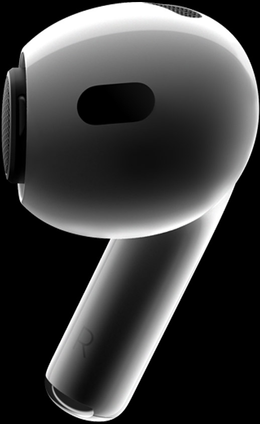
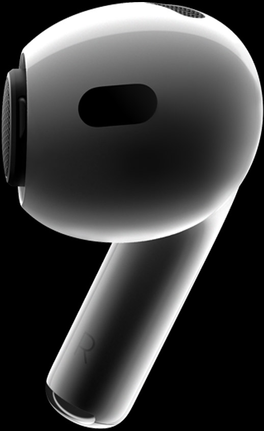

Autonomie de 6 heures d'écoutes, et jusqu'à 30 heures avec le boîtier.

Réduction active du bruit et mode Transparence, résistance à l'eau et à la sueur et design personnalisable pour un confort optimal.
Disponible le 23 Septembre 2022 pour 299 euros.

Une des spécificité des AirPods Pro, est la possibilité d'écouter de la musique sans aucun bruit ambiant grâce à la réduction de bruit active inclut directement dans les écouteurs.
La puce H2 présente dans les écouteurs, permettent une puissance et une qualité de son d'excellence.
Elle permet aussi de filtrer les bruits extérieurs capté par les micros afin d'avoir une réduction de bruit active et une transparence active efficace en temps réel.
Le mode Transparence adaptive, permet d'entendre le monde qui vous entoure et d'avoir une conversation sans soucis.
Filtre les sons extérieurs pour que vous puissiez rester attentif à votre environnement.
Les AirPods Pro permettent d'écouter vos musiques préférés en son spatial surround.
L’audio spatial avec suivi dynamique des mouvements de la tête vous plonge dans un environnement sonore digne d’une salle de cinéma.
Appuyez une fois pour mettre en pause, deux fois pour la musique suivante, trois fois pour la chanson précedente.
Appuyez longtemps sur un des deux boutons permet de faire une action personnalisable tels que, Siri, mettre en mode transparence, en mode réduction de bruit...
XS
S

M

L
 

j'ai du mal sur l'affichage de la page, sur certains écrans le site parait bien, sur d'autres le site parait trop grand ou trop petit...
Pour retirer les embouts, utilisez votre doigt pour tirer fermement sur le bas des écouteurs, qui sont attachés aux AirPods.
Pour fixer les embouts, alignez-les avec les connecteurs ovales des AirPods. Tenez le bas de l'embout avec vos doigts et poussez-le vers le bas sur le connecteur jusqu'à ce qu'il s'enclenche.

Partage Audio :
Partagez facilement un morceau ou une série entre deux paires d’AirPods. Rapprochez les de l’iPhone, de l’iPad ou de l’Apple TV qui diffuse le contenu pour les connecter instantanément.